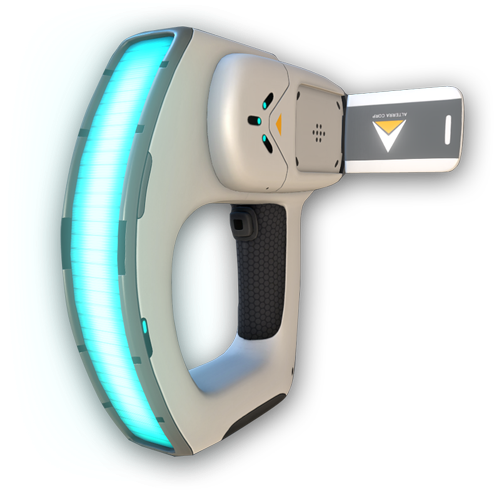
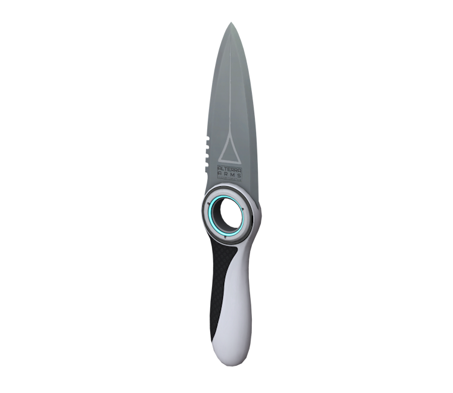
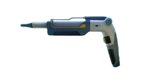
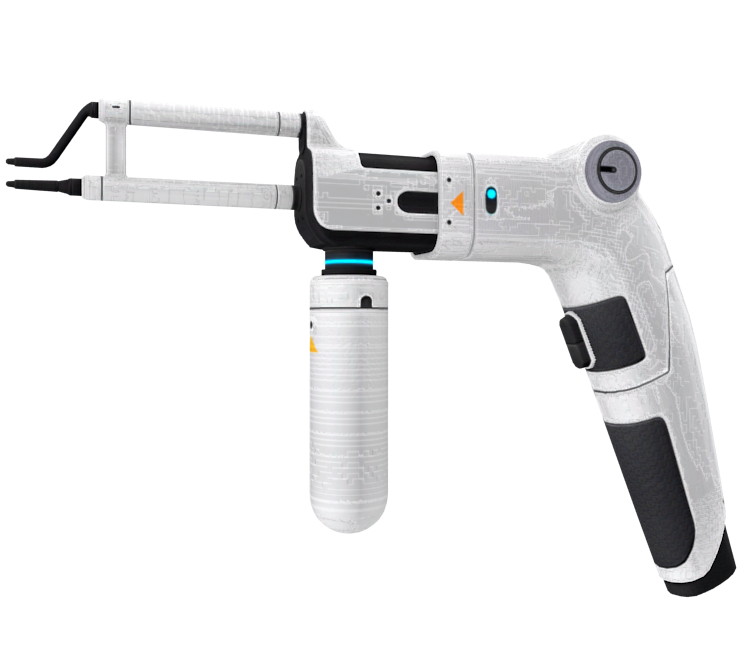
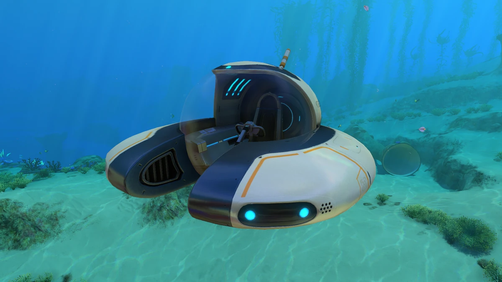
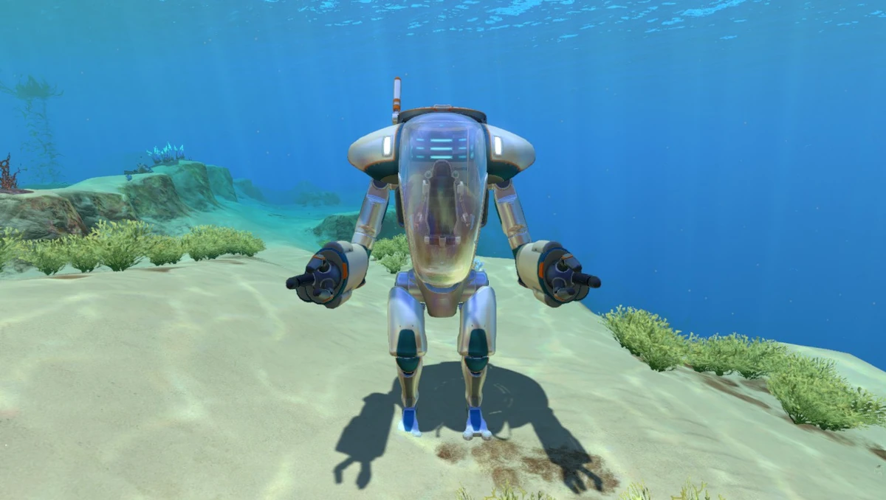
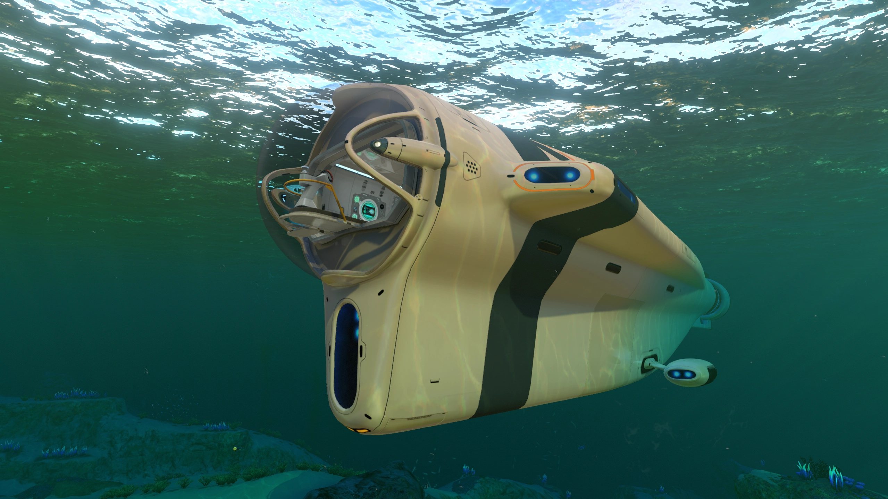

Ручні інструменти
📷 Сканер

Найважливіший пристрій. Дозволяє аналізувати флору, фауну та розбиті деталі кораблів для отримання нових креслень.
🔪 Ніж виживання

Використовується для захисту та збору зразків рослин. Може бути модернізований до Термоножа, який відразу готує рибу.
🔦 Лазерний різак

Необхідний для проникнення в заблоковані відсіки затонулих кораблів. Прорізає заклинені двері.
🔧 Ремонтний інструмент

Відновлює цілісність пошкодженої техніки, баз та зламаних панелей управління.
Підводний транспорт
«Мотильок» (Seamoth)

Швидкий та маневрений одномісний підводний човен. Ідеально підходить для розвідки на середніх глибинах. Може бути оснащений торпедами та модулем сонара.
Костюм «КРАБ» (Prawn Suit)

Броньований екзоскелет для ходіння по дну. Дозволяє збирати великі поклади ресурсів за допомогою бура та занурюватися на екстремальні глибини (до 1700 м).
«Циклоп» (Cyclops)

Величезна мобільна база довжиною 54 метри. Має власну док-станцію для меншого транспорту, великий склад та можливість встановлення внутрішнього обладнання.
Увага, Досліднику!
Пам'ятайте, що вся техніка потребує енергії. Слідкуйте за зарядом енергоячейок та вчасно будуйте зарядні станції або сонячні панелі на своїй базі.